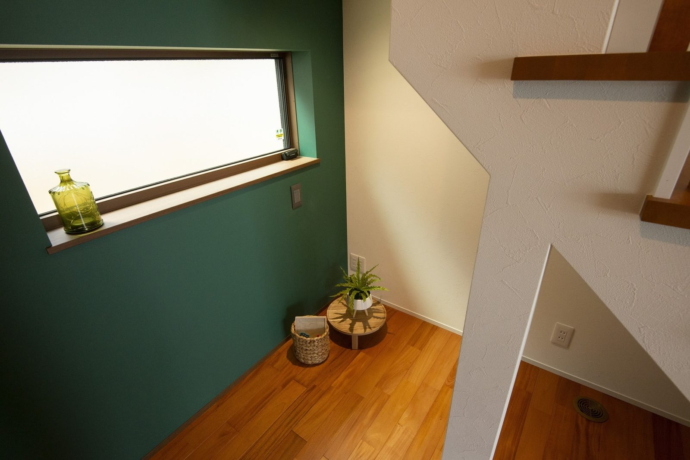
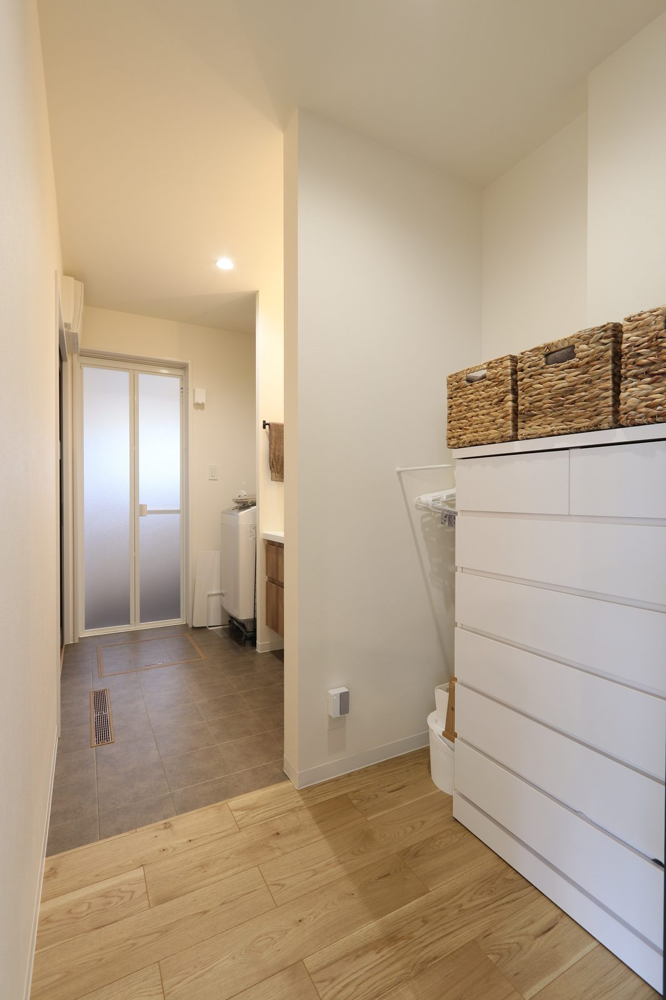

片付ける場所までが間取り
奈良で新築を考えるとき、収納の広さに目が向きます。でも掃除道具は、しまえるだけでなく、使う場所へすぐ持っていけることも大切です。今の家で「取り出すのが面倒」と感じる道具を一つ挙げると、新居で直したい点が見えてきます。
部屋の隅をどう掃除するか
写真の階段脇には窓と小さな台があり、壁際にはコンセントが見えます。物を飾る場所でも、掃除のたびに何を動かすかを考えたいですね。掃除機を持ったつもりで、床の隅まで手が届くか、コードが通路を横切らないかを見てみましょう。

収納は扉を開けた状態で見る
この実例は、洗濯機のある場所の手前に引き出し収納を置いています。収納を選ぶときは、見た目だけでなく、引き出しを開けた状態で通れるかも確認します。掃除道具を近くに置く計画なら、家族の着替えや洗濯の動きと重ならない場所を探しましょう。

充電式なら電源も一緒に
掃除機を収納の中で充電したい場合は、使う製品を決めてから置き方を相談します。本体と充電台の大きさ、抜き差しのしやすさ、取扱説明書にある設置条件を確認しましょう。コンセントを付ければ、どんな収納内でも使えるとは限りません。
一か所に集めるか、分けるか
一階と二階を行き来するなら、毎回運ぶ道具と、それぞれの階に置きたい物を分けて考えます。収納を増やす前に、今ある道具の数を確認してみてください。背の高い道具、洗剤、替えのシートでは、必要な棚の形も違います。
今の困りごとを写真にする
打合せには、掃除機と充電台の寸法、普段使う道具の写真があると具体的です。奈良で土地探しの段階でも、間取りの希望に書き添えておけます。収納の数より、出して使って戻す動きが楽になるかを確かめましょう。
よくある質問
掃除道具専用の収納は必要？
必須ではありません。手持ちの道具と使う場所を確認し、ほかの収納で取り出しやすく収まるかを先に検討しましょう。
関連記事：奈良で平屋を建てる

奈良の工務店シバサンホームで、
土地さがし・資金計画・打合せの窓口をしています。
モットーはスピード・誠実さ・楽しさ。